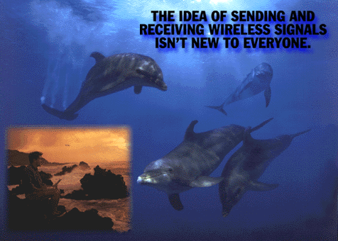

Consider Dr. Whitlow Au, one of the world's leading authorities on dolphin sonar. Since he could be found working anywhere between Coconut Island and a Boston Whaler out in Kaneohe Bay, Dr. Au relies on a portable computer, a Motorola Power Class cellular modem and flip phone to do his job. For instance, when he discovered that dolphins can hear each other from eight miles away, Dr. Au immediately shared the news with his colleagues, who were twelve thousand miles away. He's also able to send and receive e-mail, data and faxes, at speeds up to 14,400 bps. Using these tools, Dr. Au will insure for his research the very thing he's been trying to secure for his dolphins: a future. That's why we make modems. To find out more about our Power Class modems and our Lifestyle Series; modems, which are upgradeable to cellular, call 1-800-766-4883.
Return to Home Page.
Go to Motorola World Wide Web Site.